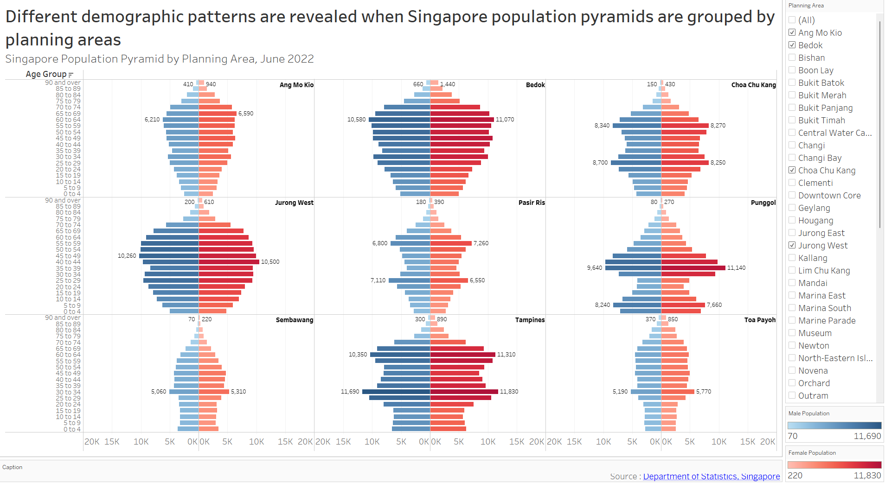

Take-home Exercise 1
Creating age-sex pyramid on Singapore population (June 2022) using Trellis display in Tableau, followed by discussion of the patterns revealed.
1. Data Source
The original dataset was downloaded from Department of Statistics, Singapore, titled Singapore Residents by Planning Area / Subzone, Age Group, Sex and Type of Dwelling, June 2022.
The file downloaded was respopagesextod2022.csv.
2. Step-by-Step Description
This section details the step-by-step procedure to create age-sex pyramid on Singapore population (2022) using Trellis display in Tableau.
2.1 Loading and cleaning data
| Step | Screenshot | |
|---|---|---|
| 1 | Load respopagesextod2022.csv file in Tableau Desktop | |
| 2 | Click on the drop-down button on field “AG”, choose Create Calculation Field | |
| 3 | Name the new field “Age Group” and key in the formula as per screenshot. This will create new field to replace the “_” with space | |
| 4 | Rename field “PA” to “Planning Area” |
2.2 Creating calculated fields to make trellis chart
| Step | Screenshot | |
|---|---|---|
| 1 | Create new worksheet and name it “Singapore Population Pyramid Trellis Chart (2022)” | |
| 2 | Click on the drop-down button beside the Search are on the side bar, choose Create Calculation Field. | |
| 3 | Name the new field “Columns” and key in the formula as per screenshot. This is required to create the Trellis Chart arrangements | |
| 4 | Right Click on newly created field “Columns” and click “Convert to Discrete” | |
| 5 | Right Click on “Columns” field and choose Duplicate this time. Rename the duplicated field “Rows” and key in the formula as per screenshot. Convert the “Rows” field to discrete as well | |
| 6 | Right Click on the “Sex” field, choose Create -> Calculation Field | |
| 7 | Name the new field it “Male Population” and key in the formula as per screenshot | |
| 8 | Right Click on newly created field “Male Population” and choose Duplicate. Rename the duplicated field “Female Population” and key in the formula as per screenshot |
2.3 Creating trellis chart
| Step | Screenshot | |
|---|---|---|
| 1 | Drag “Columns”, “Male Population”, and “Female Population” to Columns. Drag “Rows” and “Age Group” to Rows |
 |
| 2 | Drag “Planning Area” to Detail | |
| 3 | Right click on “Male Population” axis and choose Edit Axis | |
| 4 | Click on Reversed. This will reverse the “Male Population” axis to be in the middle (same as Female Population axis) | |
| 5 | Right click on “Male Population” axis and choose Sort descending. This will ensure the top Age Group is “90 and over” as per Age-Sex pyramid | |
| 6 | Right-click on “Columns” and choose Edit Table Calculation | |
| 7 | In the Table Calculation pop-up, choose Specific Dimension and check both “Planning Area” and “Age Group”. Drag “Planning Area” above “Age Group” Choose “Planning Area” on At the level option. Repeat step 6 and 7 for “Rows” |
|
| 8 | Drag “Planning Area” to filter and click OK | |
| 9 | Right-click on “Planning Area” on Filter tab and choose Show Filter. This will add the filter feature in the Worksheet |
|
| 10 | Navigate to Sum(Female Population) (red box) and click on the icon beside “Planning Area” and choose Label This will add “Planning Area” as label on the right-side of the age-sex pyramid |
|
| 11 | Choose 9 Planning Areas randomly from the filter and choose Entire View from the Toolbar This will show 9 chosen PAs and fit the entire view |
|
| 12 | Right-click on the “Columns” axis and uncheck Show Header to hide the “Columns” header | |
| 13 | Right-click on the “Rows” axis and uncheck Show Header to hide the “Rows” header | |
| 14 | Drag “Male Population” to SUM(Male Population) Color Drag “Female Population” to SUM(Female Population) Color This will group the Sex by color in the dashboard |
|
| 15 | Right-click on the “Age Group” axis and choose Format | |
| 16 | Choose Right alignment and reduce Font to 7. This will improve the readability of the Age Group axis labels | |
| 17 | Choose the same axis range for both Male and Female Population to ensure balanced view In this case, artificially fix this at 0 to 20,000 |
2.4 Creating dynamic labels
| Step | Screenshot | |
|---|---|---|
| 1 | Create new calculation field called “Max Population” and key in the formula as per screenshot This calculates the max population of female for each pane, which will be used to determine label position |
|
| 2 | Create new calculation field called “Label Position” and key in the formula as per screenshot This ensures the label position is at the first index (top) |
|
| 3 | Drag “Label Position” to Columns, to the right of “SUM(Female Population)” and change the style as Line to display the point (red-circled) indicating the future label position | |
| 4 | Drag “Planning Area” to Label of “Label Position” tab to display the “Planning Area” as label (red-boxes) Click on Size to reduce the point size to minimum. Click on Color to make it transparent (green-boxes). This will remove the point from display |
|
| 5 | There will be sign showing “>162 nulls” values related to “Label Position”. This is because of the If-Then statement, which returns null to other indexes other than 1. Hide this warning as this is not relevant. |  |
| 6 | Right Click on “Label Position”, uncheck Show Header and choose Dual Axis | |
| 7 | Drag “Male Population” to to Label of “SUM(Male Population)” tab to display the population values as label on the charts Do the same for “Female Population” |
|
| 8 | Click on the Label of “SUM(Male Population)” tab and format it to “Min/Max” and “Pane” to only highlight the min and max values per pane Do the same for “Female Population” |
|
| 9 | To display values for special highlighted bar, right-click on individual bar, select Mark Label and tick Always Show This will highlight relevant individual bars (refer to Section 3) |
2.5 Final touch-up to improve aesthetics and clarity
| Step | Screenshot | |
|---|---|---|
| 1 | Double-click on the title to add the title Subtitle can be easily added by adding a new line with different font size This will help users to understand the content and details of the dashboard |
|
| 2 | Click on Worksheet and click on Show Caption to show and edit the caption | |
| 3 | Double-click on the caption box (red-box) and edit the caption In this case, we will add the source of the data. Format the text as shown on the right |
|
| 4 | We will remove the x-axis title as there is already label to indicate Male and Female Population To do this, double-click on the axis title and delete the Axis Title (red-box) |
2.6 Final Dashboard
The final dashboard is shown in Figure 1 below.
The default display shows age-sex (population) pyramid (June 2022) grouped by Singapore planning area in 3x3 trellis display. The user(s) will be able to select any planning areas of interest using the filter feature on the right without any restriction in number of choice. This gives them freedom to choose any planning areas of interest for study or comparison purposes.
Note that the title and subtitle of the dashboard to highlight the purpose and the details of the visualization. The rationale in selecting the nine default planning areas will be explained in Section 3 below.

3. Discussion
This section discusses the reasoning behind decisions made in creating the visualization and patterns revealed by the analysis.
3.1 Unequal population distribution by planning area
By choosing all the filters (Figure 2), we can roughly group the planning areas (PAs) to three different categories:
Non-residential PAs
Lower populated PAs
Higher populated PAs
The first category would fall under non-residential zones, which are mainly used for either commercial (Downtown), industrial (Changi), or natural zone (Central Water Catchment). Note this does not necessarily mean zero population, areas like Downtown have small residential populations, most likely represented by high-end luxury apartments.
The second category (i.e., Jurong East, Kallang, Novena) could be explained by mixed-area land-uses or simply due to smaller PA size, while the last category (i.e., Sengkang, Tampines, Yishun) is full-fledged residential area. Figure 3 below shows the three distinct PA categories.
As such, it makes sense to show the absolute population instead of percentage of PA population in the x-axis to showcase this unequal distribution. On top of that, we will exclude non-residential PAs from the analysis as they hold little significance.
3.2 Different shapes of age-sex pyramids across PA
From Figure 2 above, we can analyze not only the total population, but also the varying shapes of the pyramids across PAs. These pyramids have common features like thinning population at their pinnacles (eldest age-group) and thicker middle age-groups. However, there are notable differences as well.
Referring to Figure 4 below, Bedok, Jurong West, and Ang Mo Kio pyramids are more rounded-shaped. Their highest age-group proportions lie around 50-70 years, with thinner population in other age-groups, indicating aging population.
On the other hand, Chua Chu Kang, Pasir Ris and Tampines still have high 50-70 years age-group population, but there is clear emerging young populations (20-35 years), making the pyramids look more like arrow-shaped. These trends are more prominent on the younger towns. Punggol is an extreme case with highly accentuated 35-45 and 5-10 years age groups.
Some unique cases like Sembawang and Toa Payoh offer unexpectedly high 30-35 age-group, which almost looks like outliers, making the pyramids look jagged.
3.3 Gender Ratio on each PA is relatively constant
Choosing the 9 most populated PAs reveal relatively constant gender ratio on each PA, despite different shapes of the pyramids. This is accentuated in Figure 5 below.
To illustrate this, we can examine Jurong West and Punggol age-sex pyramids closely. Jurong West pyramids look rounded. Meanwhile, Punggol has a completely different arrow-shaped pyramid. Despite these differences, the proportion of male vs female population remains rather constant for different age groups (mirror-image across central axis). This observation is quite consistent across different PAs chosen.
It is noted, however, that at the higher age group, there tend to be more females than males. This is shown most clearly in Bedok (90 and over) with 1440 females vs 660 males. Combining this information with relatively uniform gender-ratio at the lower age group, this could be explained by higher life expectancy of females.
Regardless, this trend was also observed in Figure 4 as well. Hence it was decided to select Figure 4 as the default PA filter as it highlights variations in pyramid shapes and total population.